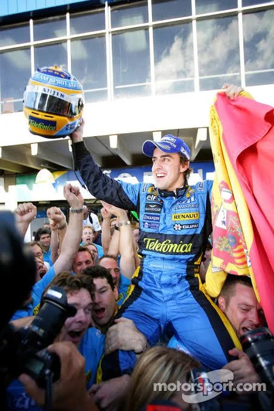
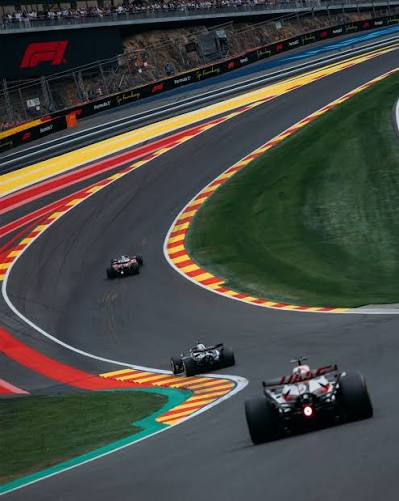
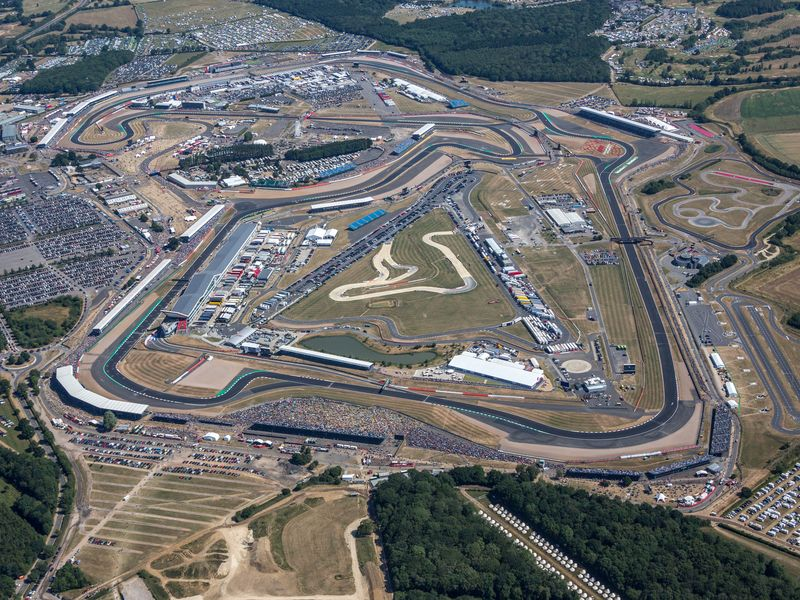
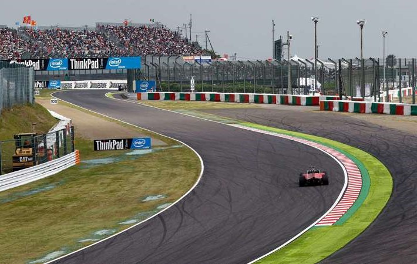

Mihael Šumaher - sedmostruki šampion iz Njemačke. Obilježio je eru Ferarija 2000-ih. Poznat je po svojoj disciplini, preciznosti i velikoj želji za pobjedom.

Luis Hamilton - britanski vozač sa sedam titula svjetskog prvaka sa MekLarenom i Mercedesom. Trijumfovao je u čak 106 velikih nagrada.

Ajrton Sena - legendarni brazilski vozač, trostruki svjetski prvak, poznat po izuzetnoj brzini i vještini vožnje po kiši.

Maks Verstapen - četvorostruki šampion iz Nizozemske, prepoznatljiv po veoma agresivnom stilu vožnje. Pobijedio je čak 19 od 22 trke 2023. godine.

Fernando Alonso - španski vozač sa dvije titule i najiskusniji vozač sa 443 započete trke. Poznat je po sposobnosti da izvuče maksimum iz bolida.

Sebastian Fetel - njemački vozač koji je osvojio četiri uzastopne titule svjetskog prvaka sa Red Bullom.

Alen Prost - Francuz sa četiri titule, poznat po inteligentnoj, preciznoj i taktičkoj vožnji, kao i rivalstvu sa Senom.

Niki Lauda - trostruki šampion iz Austrije, vratio se trkanju nakon katastrofalnog incidenta na Velikoj nagradi Njemačke 1976. godine.

Monako (Circuit de Monaco) - ulična staza karakteristična po uskim prolazima, oštrim krivinama i čuvenom tunelu.

Monca (Autodromo Nazionale Monza) - legendarna italijanska staza poznata po dugim pravcima i izuzetno velikim brzinama.

Spa-Frankoršamp (Circuit de Spa-Francorchamps) - belgijska staza smještena u šumovitom području sa velikim promjenama nadmorske visine.

Silverstoun (Silverstone Circuit) - britanska staza prepoznatljiva po brzim krivinama i bogatom istorijom.

Suzuka (Suzuka International Racing Course) - staza u Japanu jedinstvenog oblika osmice, poznata po tehnički zahtjevnim krivinama.

Nirburgring (Nürburgring) - staza u Njemačkoj poznata po legendarnom šumskom sektoru „Nordschleife“ (sjeverna petlja) koji je zbog svoje dužine, brojnih krivina i zahtjevnosti dobio nadimak „Zeleni pakao“.

Singapur (Marina Bay Street Circuit) - prva noćna trka u istoriji. Karakterišu je zahtjevne krivine kroz ulice ovog grada.

Interlagos (Autódromo José Carlos Pace) - brazilska staza poznata po promjenama nadmorske visine, nepredvidivom vremenu i uzbudljivim završnicama trka.